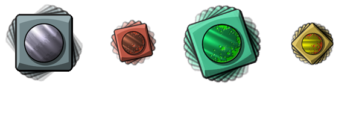

physics_apply_torque(torque)
| Streit | Beschreibung |
|---|---|
| torque | Das Drehmoment (in Newtonmetern) wird angewendet |
Rückkehr: N / A
Wenn wir über Drehmoment sprechen, sprechen wir im Allgemeinen über die Tendenz einer Kraft oder eines Impulses, eine Instanz um ihren Massenschwerpunkt zu drehen, aber in GameMaker Studio 2 Sie auch Drehmoment unabhängig auf eine Instanz anwenden, so dass sie sich in einem bestimmten Fall dreht Richtung. Wie viel Drehmoment Sie anwenden, um die gewünschte Drehung zu erreichen, hängt von der Größe und Dichte der Vorrichtung ab, die Sie Ihrer Instanz zuweisen, da beide Eigenschaften zur Definition der Masse dienen, die ihre Trägheit definiert, die das Drehmoment beeinflusst! Die allgemeine Faustregel ist, dass, wenn eine Instanz viel Trägheit hat, Sie viel Drehmoment benötigen, damit es sich zu drehen beginnt. Es sollte auch beachtet werden, dass andere Faktoren wie Schwerkraft und Kollisionen auch das Drehmoment einer Instanz beeinflussen können. Hier ist ein Bild zur Erläuterung:

Wie Sie sehen können, hängt die Menge an Drehmoment, die Sie zum Drehen des Objekts benötigen, von der darunter liegenden Masse und Trägheit ab. Dies wird alles von GameMaker Studio 2 berechnet, basierend auf der Größe und Dichte des Fixtures, das der Instanz beim Erstellen zugewiesen wird. Beachten Sie auch, dass der Wert für Drehung gegen den Uhrzeigersinn negativ sein sollte.
if keyboard_check(vk_left) physics_apply_torque(-100);
Der obige Code dreht die Instanz gegen den Uhrzeigersinn (nach links) mit einem Drehmoment von 100 Nm, wenn die linke Pfeiltaste gedrückt wird.